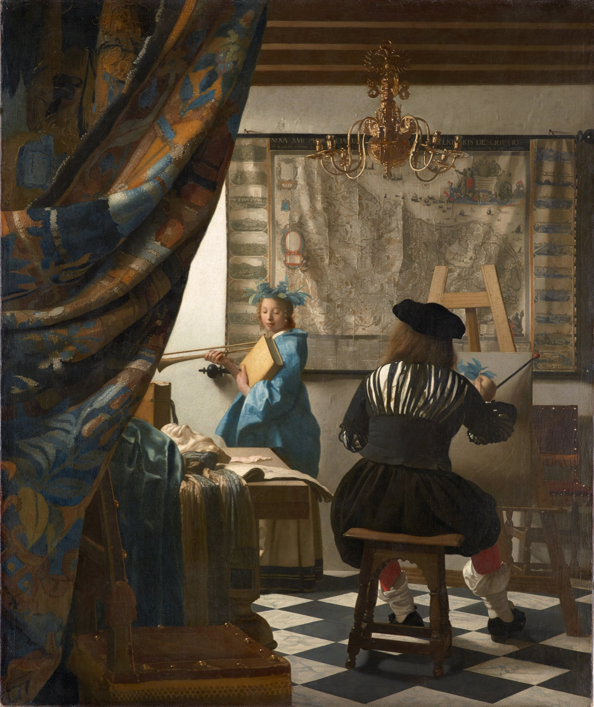

The Art of Painting Explained: The Picture Vermeer's Widow Hid
What Vermeer's studio scene is really about, where to find the pin he pushed into the canvas, and how the picture slipped through the hands of creditors, a saddlemaker and Hitler.

On 24 February 1676, not long after Johannes Vermeer's death, his widow signed a paper that gave one painting away. With creditors pressing, Catharina Bolnes handed to her mother, Maria Thins, "a piece of painting [by] her Late husband in which was depicted the Art of Painting". The chronology in the National Gallery of Art's Vermeer catalogue presents it as an attempt to settle a debt she owed her mother. The scholar Ben Broos, in the same book, puts the purpose more bluntly: to keep the work out of the creditors' hands.
That document is why we know the painting's title. Broos calls the picture "the cherished showpiece of the Vermeer family". Other pictures were already going to pay debts. In January Catharina had sold two of her husband's paintings to the baker Hendrick van Buyten, and in February a dealer acting for another creditor bought twenty-six paintings from her and carted them off to Haarlem. This one she tried to keep.
It did not stay hidden.
The microscope man who called her bluff
On 30 September 1676 the aldermen of Delft appointed an executor for the estate: Anthony van Leeuwenhoek, now remembered as a pioneer of the microscope. The catalogue's chronology sets out what followed.
On 12 March 1677 Maria Thins formally told him about the transfer of the painting. The next day Leeuwenhoek denied that the transfer was legal. Two days after that, on 15 March, an auction was held in the Guild Hall of Saint Luke in Delft, and The Art of Painting was in it.
Then the trail goes cold. Nobody can say where the painting was for well over a century, until it surfaced in Austria. The Kunsthistorisches Museum's provenance puts it in the estate of Gottfried van Swieten in Vienna. In 1813 Count Johann Rudolph Czernin bought it for a nominal sum from a Viennese saddlemaker, believing it to be by Pieter de Hooch. Only in the autumn of 1860 did Gustav Waagen, director of the Berlin museum, recognise it as a Vermeer.
A studio scene that is really an allegory
So what was the family so keen to keep? At first glance, a painter at work. He sits with his back to us, in a black doublet slashed with white, painting a young woman by the window. It is tempting to call him Vermeer, but nothing in the picture says so. The Google Arts & Culture guide to the painting notes that his "elegant, expensive clothes" were the kind the higher classes wore on special occasions. Svetlana Alpers, in The Art of Describing, calls the dress old-fashioned.
Then look at the model. She wears a crown of laurel, holds a trumpet in her right hand and a heavy book in her left. These are the attributes of Clio, the Muse of history, as set out in Cesare Ripa's Iconologia, a handbook of symbols that appeared in Dutch translation in 1644. The trumpet proclaims fame. The laurel stands for honour and glory. The book is history itself.
The Kunsthistorisches Museum reads the whole scene as an allegory: Clio inspires the painter and proclaims the glory of painting in the old Netherlands. On the table beside her lie a plaster mask, a sketchbook and folds of cloth. The museum sees in them the unity of the arts, sculpture and drawing alongside the picture on the easel.
History painting, the telling of great stories, was ranked the highest kind of art in the 17th century. Vermeer painted quiet rooms. Some scholars take the Muse as his bow to that hierarchy. Alpers is not convinced. To her the picture turns the idea on its head, as if History were raising her trumpet in praise of the kind of careful, descriptive painting Vermeer himself made.
Where to look: the easel
Find the small canvas on the easel, just past the painter's raised right arm. He has started at the top. According to Jørgen Wadum's technical essay in the National Gallery of Art catalogue, he seems to have finished the flesh and has begun to lay in Clio's laurel leaves. He is painting them blue.
Below his arm, faint white lines sketch out the rest of the composition. The Google Arts & Culture guide points out something odd: the canvas is too small. It cannot fit the woman's full length, and there will be no room for her trumpet.
A map of a country that no longer existed
Behind them hangs a huge wall map. Read the lettering along its top edge and you will find the title, in Latin, of a map of the Seventeen Provinces, signed by Nicolaus Piscator, the Latinised name of the mapmaker Claes Jansz Visscher, who made it in 1636. When Alpers wrote in the early 1980s, the map was known from just one surviving copy, in Paris.
The provinces on it were the old Habsburg Netherlands, ruled by the king of Spain, with views of their cities running down the borders. By the time Vermeer painted it they were long divided. The northern provinces had declared independence in 1581, and the Dutch Republic was recognised in 1648, at the end of the Eighty Years' War.
So why paint an out-of-date map? The museum says it refers to a land that had always owed its fame to painting. Others read it as longing for the lost union. Look closely and you will see a strong vertical crease running down the map, splitting north from south. Alpers adds the painter's dated clothes and the Habsburg eagle on top of the chandelier as further hints at the past.
That chandelier deserves a second look. Vermeer built its shine with thick dabs of lead-yellow paint. Chandeliers like this, the Google guide notes, were mostly found in churches and government buildings, rarely in a private studio.
Now drop your eye to the bottom strip of the map, just to the right of Clio's blue sleeve. There is the signature, I Ver-Meer. It is the most elaborate form of his name, used elsewhere only on The Geographer. On most of his signed works he used an abbreviated form such as IVMeer.
The pinhole in the middle of the room
Vermeer's rooms feel calm partly because their perspective is so exact. Here you can find how he did it.
Look for the dark knob on the end of the map's lower rod, close to Clio's hand. Wadum places the vanishing point just under it. There Vermeer pushed a pin into the canvas, tied a string to it, rubbed the string with chalk and snapped it against the surface to print straight lines running back to that one point. The hole shows up as a dark spot in X-rays, because the ground layers contain lead white. Wadum counts thirteen paintings by Vermeer that still carry physical evidence of the pin. He was not alone: De Hooch, Houckgeest, De Witte, Dou and Metsu used pins too.
On the left, the heavy patterned rug is pulled back like a theatre curtain, Wadum says, by "an invisible hand". It works as a repoussoir, a large dark shape in the foreground that pushes everything else back and deepens the room.
Hitler's Vermeer
The painting stayed in the Czernin family's gallery until 1940, when Adolf Hitler bought it from Count Jaromir Czernin for the museum he planned at Linz. In the winter of 1943–44 it was moved for safety to the salt mine at Bad Aussee. In spring 1945 the US Army recovered it and took it to the Central Collecting Point in Munich. The Americans then handed it to the Austrian government, which placed it in the Kunsthistorisches Museum. The museum's object page dates the handover to 7 November 1946.
The Czernins tried several times to get it back. Each claim was refused, the last in 1960 at Austria's Administrative Court. In September 2008 the heirs tried again under Austria's 1998 art restitution law. In 2011 the culture ministry decided that the law did not apply. The painting hangs today in Room XII of the Kunsthistorisches Museum's picture gallery, oil on canvas, 120 × 100 cm.
Living with Vermeer's studio
The Art of Painting is a little taller than it is wide, so on a 16:10 Mac screen it fills the height with a soft, blurred version of itself at the sides. artbip shows the whole canvas, so the rug, the map's edges and the checked floor all stay in. At desktop size the light on the chandelier, the blue laurel and Clio's lowered eyes read clearly. The signature and the crease in the map reward a closer look over a few days. The app has a longer note on the painting too.
Sources
- The Art of Painting – Kunsthistorisches Museum Wien
- On the current state of the discussion of the provenance of Vermeer's The Art of Painting – Kunsthistorisches Museum (archived 2012)
- The Art of Painting – Google Arts & Culture
- Arthur K. Wheelock Jr. (ed.), with Ben Broos, Albert Blankert and Jørgen Wadum, Johannes Vermeer (National Gallery of Art, Washington, 1995)
- Walter Liedtke, Dutch Paintings in The Metropolitan Museum of Art (Metropolitan Museum of Art, 2007)
- Svetlana Alpers, The Art of Describing: Dutch Art in the Seventeenth Century (University of Chicago Press, 1983; paperback 1984)